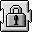
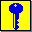
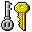
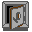

| Access Protection | File/Disk Wiping | File Encryption | File Folder Hiding | Firewall | Password Storage | Steganography |
|
|
|
|
|
|
|
| Access Protection |
File/Disk Wiping |
File Encryption |
File/Folder Hiding |
Parental Control |
Password Storing |
Personal Firewall |
| The Block DiskLock iEmpower LockOut Keys Off Password Key Sesame SuperLock |
Burn DoDelete The Eraser MacWasher NetShred ShredIt PGP |
The MacLockSmith PGP QuickEncrypt Tiny Cipher Tresor |
Change Visibility SECREt Secret Folder Stego Trygve's CMM Plug-ins |
CyberPatrol SurfDoubler |
ForgotIt? Key Pad MacPasser My Privacy Password Retriever PasswordWallet SecurePass The Serial Keeper Storage Bin Web Confidential |
BrickHouse DoorStop IPNetSentry NetBarrier SurfDoubler |

The Block 2.1
Password Key 3.2.2
PGP 7.0.3
Tresor 1.2